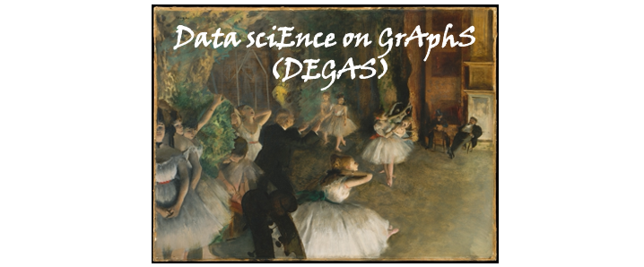
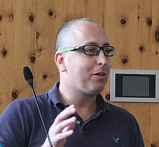

SPS DSI Webinar Series: Data sciEnce on GrAphS (DEGAS)

This DEGAS Webinar Series is an event initiated by the IEEE SPS Data Science Initiative. The goal is to provide the SP community with updates and advances in learning and inference on graphs. Signal processing and machine learning often deal with data living in regular domains such as space and time. This webinar series will cover the extension of these methods to network data, including topics such as graph filtering, graph sampling, spectral analysis of network data, graph topology identification, geometric deep learning, and so on. Applications can for instance be found in image processing, social networks, epidemics, wireless communications, brain science, recommender systems, and sensor networks.
Abstract: Manifold learning algorithms aim to map high-dimensional data into lower dimensions while preserving local and global structure, however popular methods distort distances between points in the low-dimensional space. In this talk, I present a bottom-up manifold learning framework that constructs low-distortion local views of a dataset in lower dimensions and registers these to obtain a global embedding. Our global alignment formulation enables tearing manifolds so as to embed them into their intrinsic dimension, including manifolds without boundary and non-orientable manifolds. To quantitatively evaluate the quality of low-dimensional embeddings, we present a new strong and weak notion of global distortion. We show that Riemannian Gradient Descent (RGD) converges to a global embedding with guaranteed low global distortion. Compared to competing manifold learning and data visualization approaches, our framework achieves the lowest local and global distortion, as well as the lowest reconstruction error in downstream decoding tasks, on synthetic and real-world neuroscience datasets. Joint work with Dhruv Kohli, Alex Cloninger, Bas Nieuwenhuis and Devika Narain.
Speaker Bio: Gal Mishne is an assistant professor in the Halıcıoğlu Data Science Institute (HDSI) at UC San Diego, and affiliated with the ECE department, the CSE department and the Neurosciences Graduate program. Her research interests include high-dimensional data analysis, geometric representation learning, image processing and computational neuroscience. Before joining UCSD, Dr. Mishne was a Gibbs Assistant Professor in the Applied Math program at Yale University, with Prof. Ronald Coifman’s research group. She completed her PhD in 2017 at the Technion at the Faculty of Electrical Engineering under the supervision of Prof. Israel Cohen. She holds B.Sc. degrees (summa cum laude) in Electrical Engineering and Physics from the Technion, and upon graduation worked as an image processing engineer for several years. Dr. Mishne is a 2017 Rising Star in EECS and Emerging Scholar in Science.
Upcoming Talks (all date/time are in Paris Time)
Click here if you would like to import the seminar information to iCal/Google Calendar.
You can find the recorded seminars on the IEEE SPS Youtube Channel or the direct links below. You can also find the slides shared by the speakers (if available) by clicking on the expand [+] button.

Title: Network GPS - A Perturbative Theory of Network Dynamics
Abstract: Universal network characteristics, such as the scale-free degree distribution and the small world phenomena, are the bread and butter of network science. But how do we translate such topological findings into an understanding of the system's dynamic behavior: for instance, how does the small world structure impact the patterns of flow in the system? Or how does the presence of hubs affect the distribution of influence? In essence, whether its communicable diseases, genetic regulation or the spread of failures in an infrastructure network, these questions touch on the patterns of information spread in the network. It all begins with a local perturbation, such as a sudden disease outbreak or a local power failure, which then propagates to impact all other nodes. The challenge is that the resulting spatio-temporal propagation patterns are diverse and unpredictable - indeed a Zoo of spreading patterns - that seem to be only loosely connected to the network topology. We show that we can tame this zoo, by exposing a systematic translation of topological elements into their dynamic outcome, allowing us to navigate the network, and, most importantly - to expose a deep universality behind the seemingly diverse dynamics.
Speaker Bio: Prof. Baruch Barzel is a physicist and applied mathematician, director of the Complex Network Dynamics lab at Bar-Ilan University. His main research areas are statistical physics, complex systems, nonlinear dynamics and network science. Barzel completed his Ph.D. in physics at the Hebrew University of Jerusalem, Israel as a Hoffman Fellow. He then pursued his postdoctoral training at the Center for Complex Network Research at Northeastern University and at the Channing Division of Network Medicine, Harvard Medical School. Barzel is also an active public lecturer, presenting a weekly corner on Israel National Radio. His research focuses on the dynamic behavior of complex networks, uncovering universal principles that govern the dynamics of diverse systems, such as disease spreading, gene regulatory networks, protein interactions or population dynamics. Prof. Barzel is the recipient of the Racah Prize (2007) and of the Krill Prize on behalf of the Wolf Foundation (2019).
Title: Connecting the dots: Leveraging GSP to learn graphs from nodal observations
Abstract: The talk will provide an overview of graph signal processing (GSP)-based methods designed to learn an unknown network from nodal observations. Using signals to learn a graph is a central problem in network science and statistics, with results going back more than 50 years. The main goal of the talk is threefold: i) explaining in detail fundamental GSP-based methods and comparing those with classical methods in statistics, ii) putting forth a number of GSP-based formulations and algorithms able to address scenarios with a range of different operating conditions, and iii) briefly introducing generalizations to more challenging setups, including multi-layer graphs and learning in the presence of hidden nodal variables. Our graph learning algorithms will be designed as solutions to judiciously formulated constrained-optimization sparse-recovery problems. Critical to this approach is the codification of GSP concepts such as signal smoothness and graph stationarity into tractable constraints. Last but not least, while the focus will be on the so-called network association problem (a setup where observations from all nodes are available), the problem of network tomography (where some nodes remain unobserved, and which can be related to latent-variable graphical lasso) will also be discussed.
Speaker Bio: Antonio G. Marques received the telecommunications engineering degree and the Doctorate degree, both with highest honors, from the Carlos III University of Madrid, Spain, in 2002 and 2007, respectively. In 2007, he became a faculty of the Department of Signal Theory and Communications, King Juan Carlos University, Madrid, Spain, where he currently develops his research and teaching activities as a Full Professor and serves as Deputy of the President. From 2005 to 2015, he held different visiting positions at the University of Minnesota, Minneapolis. In 2016 and 2017 he was a visiting scholar at the University of Pennsylvania, Philadelphia. His current research focuses on signal processing for graphs, stochastic network optimization, and machine learning over graphs, with applications to communications, health, and finance. Dr. Marques is a member of IEEE, EURASIP and the ELLIS society, having served these organizations in a number of posts. In recent years he has been an editor of three journals, a member of the IEEE Signal Processing Theory and Methods Technical Committee, a member of the IEEE Signal Processing Big Data Special Interest Group, the Technical Co-Chair of the IEEE CAMSAP Workshop, the General Co-chair of the IEEE Data Science Workshop, and the General Chair of the Graph Signal Processing Workshop. Dr. Marques has also served as an external research proposal evaluator for different organizations, including the Spanish, French, Israeli, Dutch, USA, and Swiss National Science Foundations. His work has received multiple journal and conference paper awards, with recent ones including a 2020 Young Best Paper Award of the IEEE SPS and the "2020 EURASIP Early Career Award", for his "significant contributions to network optimization and graph signal processing".
Abstract: Graph signal processing (GSP) tries to device appropriate tools to process signals supported on graphs by generalizing classical methods from signal processing of time-series and images -- such as smoothing, filtering and supported on the nodes of graphs. Typically, this involves leveraging the structure of the graph as encoded in the spectral properties of the graph Laplacian. In applications such as traffic network analysis, however, the signals of interest are naturally defined on the edges of a graph, rather than on the nodes. After a very brief recap of the central ideas of GSP, we examine why the standard tools from GSP may not be suitable for the analysis of such edge signals. More specifically, we discuss how the underlying notion of a 'smooth signal' inherited from (the typically considered variants of) the graph Laplacian are not suitable when dealing with edge signals that encode flows. To overcome this limitation we devise signal processing tools based on the Hodge-Laplacian and the associated discrete Hodge Theory for simplicial (and cellular) complexes. We discuss applications of these ideas for signal smoothing, semi-supervised and active learning for edge-flows on discrete (or discretized) spaces.
Speaker Bio: Dr. Michael Schaub studied Electrical Engineering and Information Technology at ETH Zurich with a focus on communication systems. After a MSc in Biomedical Engineering at Imperial College London (Neurotechnology stream), he moved to the Mathematics Department of Imperial College London to obtain a PhD in 2014. In the following he worked in Belgium, jointly at the Université catholique de Louvain and at the University of Namur, as a Postdoctoral Research Fellow. In November 2016, Dr. Schaub moved to the Massachusetts Institute of Technology (MIT) as a Postdoctoral Research Associate. From July 2017 onwards he was a Marie Skłodowska Curie Fellow at MIT and the University of Oxford, before joining RWTH Aachen University in June 2020, supported by the NRW Return Programme (2019).
Abstract: Drug discovery is a very long and expensive process, taking on average more than 10 years and costing $2.5B to develop a new drug. Artificial intelligence has the potential to significantly accelerate the process of drug discovery by extracting evidence from a huge amount of biomedical data and hence revolutionizes the entire pharmaceutical industry. In particular, graph representation learning and geometric deep learning--a fast growing topic in the machine learning and data mining community focusing on deep learning for graph-structured and 3D data---has seen great opportunities for drug discovery as many data in the domain are represented as graphs or 3D structures (e.g. molecules, proteins, biomedical knowledge graphs). In this talk, I will introduce our recent progress on geometric deep learning for drug discovery and also a newly released open-source machine learning platform for drug discovery, called TorchDrug.
Speaker Bio: Jian Tang is currently an assistant professor at Mila-Quebec AI Institute and also at Computer Science Department and Business School of University of Montreal. He is a Canada CIFAR AI Research Chair. His main research interests are graph representation learning, graph neural networks, geometric deep learning, deep generative models, knowledge graphs and drug discovery. During his PhD, he was awarded with the best paper in ICML2014; in 2016, he was nominated for the best paper award in the top data mining conference World Wide Web (WWW); in 2020, he is awarded with Amazon and Tencent Faculty Research Award. He is one of the most representative researchers in the growing field of graph representation learning and has published a set of representative works in this field such as LINE and RotatE. His work LINE on node representation learning has been widely recognized and is the most cited paper at the WWW conference between 2015 and 2019. Recently, his group just released an open-source machine learning package, called TorchDrug, aiming at making AI drug discovery software and libraries freely available to the research community. He is an area chair of ICML and NeurIPS.
Title: Modeling physical structure and dynamics using graph-based machine learning
Abstract: This talk presents various ways complex physical objects and dynamics can be modeled using graph-based machine learning. Graph neural networks and Transformers have grown rapidly in popularity in recent years, and much of the progress has been driven by applications which demand representations and computations which are not well-supported by more traditional deep learning methods. Here we'll explore learning to simulate fluids and non-rigid materials, as well as learning probabilistic generative models of 3D objects and molecules, focusing on how the model choices and innovations were motivated by the structure of the problem and data. The goal of the talk is to emphasize the rich interface between graph-based machine learning and problems that arise in physical settings, and offer practical prescriptions for applying graph-based machine learning to other physical domains.
Speaker Bio: Peter Battaglia is a research scientist at DeepMind. Previously he was a postdoc and research scientist in MIT's Department of Brain and Cognitive Sciences. His current work focuses on approaches for reasoning about and interacting with complex systems, by combining richly structured knowledge with flexible learning algorithms.
Title: Neural diffusion PDEs, differential geometry, and graph neural networks
Abstract: In this talk, I will make connections between Graph Neural Networks (GNNs) and non-Euclidean diffusion equations. I will show that drawing on methods from the domain of differential geometry, it is possible to provide a principled view on such GNN architectural choices as positional encoding and graph rewiring as well as explain and remedy the phenomena of oversquashing and bottlenecks.
Speaker Bio: Michael Bronstein is the DeepMind Professor of AI at the University of Oxford and Head of Graph Learning Research at Twitter. He was previously a professor at Imperial College London and held visiting appointments at Stanford, MIT, and Harvard, and has also been affiliated with three Institutes for Advanced Study (at TUM as a Rudolf Diesel Fellow (2017-2019), at Harvard as a Radcliffe fellow (2017-2018), and at Princeton as a short-time scholar (2020)). Michael received his PhD from the Technion in 2007. He is the recipient of the Royal Society Wolfson Research Merit Award, Royal Academy of Engineering Silver Medal, five ERC grants, two Google Faculty Research Awards, and two Amazon AWS ML Research Awards. He is a Member of the Academia Europaea, Fellow of IEEE, IAPR, BCS, and ELLIS, ACM Distinguished Speaker, and World Economic Forum Young Scientist. In addition to his academic career, Michael is a serial entrepreneur and founder of multiple startup companies, including Novafora, Invision (acquired by Intel in 2012), Videocites, and Fabula AI (acquired by Twitter in 2019).
Title: Federated Learning in Big Data over Networks
Abstract: Many important application domains generate distributed collections of heterogeneous local datasets. These local datasets are related via an intrinsic network structure that arises from domain-specific notions of similarity between local datasets. Networked federated learning aims at learning a tailored local model for each local dataset. We formulate networked federated learning using the concept of generalized total variation (GTV) minimization as a regularizer. This formulation unifies and considerably extends recent approaches to federated multi-task learning. We derive precise conditions on the local models as well on their network structure such that our algorithm learns nearly optimal local models. Our analysis reveals an interesting interplay between the (information-) geometry of local models and the (cluster-) geometry of their network.
Speaker Bio: Alexander Jung obtained a Ph.D. (with sub auspiciis) in 2012 from Technical University Vienna. After Post-Doc periods at TU Vienna and ETH Zurich, he joined Aalto University as an Assistant Professor for Machine Learning in 2015, He leads the group “Machine Learning for Big Data” which studies explainable machine learning in network structured data. Alex first-authored a paper that won a Best Student Paper Award at IEEE ICASSP 2011. He received an AWS Machine Learning Research Award and was the "Computer Science Teacher of the Year" at Aalto University in 2018. Currently he serves as an associate editor for the IEEE Signal Processing Letters and as the chair of the IEEE Finland Jt. Chapter on Signal Processing and Circuits and Systems. He authored the textbook "Machine Learning: The Basics" which will be published by Springer in 2022.
Title: Causal Inference on Networks to Characterize Disinformation Narrative Propagation
Abstract: The weaponization of digital communications and social media to conduct disinformation campaigns at immense scale, speed, and reach presents new challenges to identify and counter hostile influence operations (IOs). This talk presents the causal inference approach used as part of an end-to-end framework to automate detection of disinformation narratives, networks, and influential actors. The framework integrates natural language processing, machine learning, graph analytics, and a network causal inference approach to quantify the impact of individual actors in spreading IO narratives. The impact of each account is inferred by its causal contribution to the overall narrative propagation over the entire network, which is not accurately captured by traditional activity- and topology-based impact statistics. Impact estimation is based on a method that quantifies each account's unique causal contribution to the overall narrative propagation over the entire network. It accounts for social confounders (e.g., community membership, popularity) and disentangles their effects from the causal estimation using an approach based on the network potential outcome framework. Because it is impossible to observe the both actual and potential outcomes, the missing potential outcomes must be estimated, which is accomplished using a model. We demonstrate this approach's capability on real-world hostile IO campaigns with Twitter datasets collected during the 2017 French presidential elections, and known IO accounts disclosed by Twitter over a broad range of IO campaigns (May 2007 to February 2020), over 50,000 accounts, 17 countries, and different account types including both trolls and bots. Our system classifies IO accounts and networks, and discovers high-impact accounts that escape the lens of traditional impact statistics based on activity counts and network centrality. Results are corroborated with independent sources of known IO accounts from US Congressional reports, investigative journalism, and IO datasets provided by Twitter.
Speaker Bio: Dr. Steven Thomas Smith is a senior staff member in the Artificial Intelligence Software Architectures and Algorithms Group at MIT Lincoln Laboratory. He is an expert in radar, sonar, and signal processing who has made pioneering and wide-ranging contributions through his research and technical leadership in estimation theory, resolution limits, and signal processing and optimization on manifolds. He has more than 20 years of experience as an innovative technology leader in statistical data analytics, both theory and practice, and broad leadership experience ranging from first-of-a-kind algorithm development for groundbreaking sensor systems to graph-based intelligence architectures. His contributions span diverse applications from optimum network detection, geometric optimization, geometric acoustics, superresolution, and nonlinear parameter estimation.
Dr. Smith received the SIAM Outstanding Paper Award in 2001 and the IEEE Signal Processing Society Best Paper Award in 2010. He has been an invited speaker as an original inventor of some of the big advances in signal processing over the last decade. He was associate editor of the IEEE Transactions on Signal Processing from 2000 to 2002 and serves on the IEEE Sensor Array and Multichannel and Big Data committees. He has taught signal processing courses at Harvard, MIT, and for the IEEE.
Dr. Smith holds the BASc degree (1986) in electrical engineering and honours mathematics from the University of British Columbia, Vancouver, B.C., and the PhD degree (1993) in applied mathematics from Harvard University, Cambridge, Massachusetts.
Title: Learning and Extrapolation in Graph Neural Networks
Abstract: Graph Neural Networks (GNNs) have become a popular tool for learning representations of graph-structured inputs, with applications in computational chemistry, recommendation, pharmacy, reasoning, and many other areas. In this talk, I will show some recent results on learning with message-passing GNNs. In particular, GNNs possess important architectural properties and inductive biases that affect learning and generalization. Studying the effect of these inductive biases can be challenging, as they are affected by the architecture (structure and aggregation functions) and training algorithm, together with data and learning task. In particular, we study these biases for learning structured tasks, e.g., simulations or algorithms, and show how for such tasks, architecture choices affect generalization within and outside the training distribution.
This talk is based on joint work with Keyulu Xu, Jingling Li, Mozhi Zhang, Weihua Hu, Vikas Garg, Simon S. Du, Tommi Jaakkola, Jure Leskovec and Ken-ichi Kawarabayashi.
Speaker Bio: Stefanie Jegelka is an Associate Professor in the Department of EECS at MIT. Before joining MIT, she was a postdoctoral researcher at UC Berkeley, and obtained her PhD from ETH Zurich and the Max Planck Institute for Intelligent Systems. Stefanie has received a Sloan Research Fellowship, an NSF CAREER Award, a DARPA Young Faculty Award, Google research awards, a Two Sigma faculty research award, the German Pattern Recognition Award and a Best Paper Award at ICML. She has co-organized multiple workshops on (discrete) optimization in machine learning and graph representation learning, and serves as an Action Editor at JMLR and a program chair of ICML 2022. Her research interests span the theory and practice of algorithmic machine learning, in particular, learning problems that involve combinatorial structure.
Abstract: Graph neural networks (GNNs) are successful at learning representations for network data but their application to large graphs is constrained by training cost. In this talk we introduce the concept of graph machine learning by transference: Training GNNs on moderate-scale graphs and executing them on large-scale graphs. To study the theoretical underpinnings of learning by transference we consider families of graphs converging to a common graph limit. This so-called graphon is a bounded symmetric kernel which can be interpreted as both a random graph model and a limit object of a convergent sequence of graphs. Graphs sampled from a graphon almost surely share structural properties in the limit, which implies that graphons describe families of similar graphs. We can thus expect that processing data supported on graphs associated with the same graphon should yield similar results. In this talk we formalize this intuition by showing that the error made when transferring a GNN across two graphs in a graphon family is small when the graphs are sufficiently large.
Speaker Bio: Alejandro Ribeiro received the B.Sc. degree in electrical engineering from the Universidad de la República Oriental del Uruguay in 1998 and the M.Sc. and Ph.D. degrees in electrical engineering from the Department of Electrical and Computer Engineering at the University of Minnesota in 2005 and 2007. He joined the University of Pennsylvania (Penn) in 2008 where he is currently Professor of Electrical and Systems Engineering. His research is in wireless autonomous networks, machine learning on network data and distributed collaborative learning. Papers coauthored by Dr. Ribeiro received the 2014 O. Hugo Schuck best paper award, and paper awards at EUSIPCO 2021, ICASSP 2020, EUSIPCO 2019, CDC 2017, SSP Workshop 2016, SAM Workshop 2016, Asilomar SSC Conference 2015, ACC 2013, ICASSP 2006, and ICASSP 2005. His teaching has been recognized with the 2017 Lindback award for distinguished teaching and the 2012 S. Reid Warren, Jr. Award presented by Penn’s undergraduate student body for outstanding teaching. Dr. Ribeiro is a Fulbright scholar class of 2003 and Penn Fellow class of 2015.
Title: Graph Neural Networks are Dynamic Programmers
Abstract: Recent advances in neural algorithmic reasoning with graph neural networks (GNNs) are propped up by the notion of algorithmic alignment. Broadly, a neural network will be better at learning to execute a reasoning task (in terms of sample complexity) if its individual components align well with the target algorithm. Specifically, GNNs are claimed to align with dynamic programming (DP), a general problem-solving strategy which expresses many polynomial-time algorithms. However, has this alignment truly been demonstrated and theoretically quantified? Here we show, using methods from category theory and abstract algebra, that there exists an intricate connection between GNNs and DP, going well beyond the initial observations over individual algorithms such as Bellman-Ford. Exposing this connection, we easily verify several prior findings in the literature, and hope it will serve as a foundation for building stronger algorithmically aligned GNNs.
Speaker Bio: Petar Veličković is a Staff Research Scientist at DeepMind, Affiliated Lecturer at the University of Cambridge, and an Associate of Clare Hall, Cambridge. He holds a PhD in Computer Science from the University of Cambridge (Trinity College), obtained under the supervision of Pietro Liò. Petar's research concerns geometric deep learning—devising neural network architectures that respect the invariances and symmetries in data (a topic he's co-written a proto-book about). For his contributions to the area, Petar is recognised as an ELLIS Scholar in the Geometric Deep Learning Program. Within this area, Petar focusses on graph representation learning and its applications in algorithmic reasoning and computational biology. In particular, he is the first author of Graph Attention Networks—a popular convolutional layer for graphs—and Deep Graph Infomax—a popular self-supervised learning pipeline for graphs (featured in ZDNet). Petar's research has been used in substantially improving the travel-time predictions in Google Maps (featured in the CNBC, Endgadget, VentureBeat, CNET, the Verge and ZDNet), and guiding the intuition of mathematicians towards new top-tier theorems and conjectures (featured in Nature, New Scientist, The Independent, Sky News, The Sunday Times and The Conversation).
Title: Graph Constructions for Machine Learning Applications: New Insights and Algorithms
Abstract: Graphs have long been used in a wide variety of problems, such as in analysis of social networks, machine learning, network protocol optimization or image processing. In the last few years, a growing body of work has been developed to extend and complement well known concepts in spectral graph theory, leading to
the emergence of Graph Signal Processing (GSP) as a broad research field. In this talk we focus on summarizing recent results that lead to a GSP perspective of machine learning problems. The key observation is that representations of sample data points (e.g., images in a training set) can be used to construct graphs, with nodes representing samples, label information resulting in graph signals, and edge weights capturing the relative positions of samples in feature space. We will first review how this perspective has been used in well known techniques for label propagation and semi-supervised learning. Then, we will introduce the non-negative kernel regression (NNK) graph construction, describe its properties, and introduce example applications in machine learning areas such as i) model explainability, ii) local interpolative classification and iii) self-supervised learning.
Speaker Bio: Antonio Ortega received the Telecommunications Engineering degree from the Universidad Politecnica de Madrid, Madrid, Spain in 1989 and the Ph.D. in Electrical Engineering from Columbia University, New York, NY in 1994. His Ph.D. work was supported by the Fulbright Commission and the Ministry of Education of Spain. He joined the University of Southern California as an Assistant Professor in 1994 and is currently a Professor. He was Director of the Signal and Image Processing Institute and Associate Chair of Electrical Engineering-Systems. In 1995 he received the NSF Faculty Early Career Development (CAREER) Award. He is a Fellow of the IEEE, a member of the ACM and of APSIPA. He has been an Associate Editor of the IEEE Transactions on Image Processing, the IEEE Signal Processing Letters, and Area Editor for Feature Articles, Signal Processing Magazine. He was the technical program co-chair for ICIP 2008 and is technical program co-chair of PCS 2013. He has been a member of the IEEE Signal Processing Society Multimedia Signal Processing (MMSP) and Image and Multidimensional Signal Processing (IMDSP) technical committees. He was Chair of the IMDSP committee in 2004-5. He was the inaugural Editor-in-Chief of the APSIPA Transactions on Signal and Information Processing.
He received the 1997 Northrop Grumman Junior Research Award awarded by the School of Engineering at USC. In 1998 he received the Leonard G. Abraham IEEE Communications Society Prize Paper Award for the best paper published in the IEEE Journal on Selected Areas in Communications in 1997, for his paper co-authored with Chi-Yuan Hsu and Amy R. Reibman. He also received the IEEE Signal Processing Society, Signal Processing Magazine Award in 1999 for a paper co-authored with Kannan Ramchandran, which appeared in the Signal Processing Magazine in November 1998. He also received the 2006 EURASIP Journal on Advances in Signal Processing Best Paper award for his paper A Framework for Adaptive Scalable Video Coding Using Wyner-Ziv Techniques co-authored with Huisheng Wang and Ngai-Man Cheung. His research interests are in the area of digital image and video compression, with a focus on graph signal processing and on systems issues related to transmission over networks, application-specific compression techniques, and fault/error tolerant signal processing algorithms.
Title: Distributed stochastic non-convex optimization: Optimal regimes and tradeoffs
Abstract: In many emerging applications, it is of paramount interest to learn hidden parameters from data. For example, self-driving cars may use onboard cameras to identify pedestrians, highway lanes, or traffic signs in various light and weather conditions. Problems such as these can be framed as classification, regression, or risk minimization in general, at the heart of which lies stochastic optimization and machine learning. In many practical scenarios, distributed and decentralized learning methods are preferable as they benefit from a divide-and-conquer approach towards storage and computation at the expense of local (short-range) communication. In this talk, I will present our recent work that develops a novel algorithmic framework to address various aspects of distributed stochastic first-order optimization methods for non-convex problems. A major focus will be to characterize regimes where distributed solutions outperform their centralized counterparts and lead to optimal convergence guarantees. Moreover, I will characterize certain desirable attributes of distributed methods in the context of linear speedup and network-independent convergence rates. Throughout the talk, I will demonstrate such key aspects of the proposed methods with the help of provable theoretical results and numerical experiments on real data.
Speaker Bio: Usman A. Khan is a Professor (effective Sep. 2022) of Electrical and Computer Engineering (ECE) at Tufts University, USA. His research interests include signal processing, stochastic systems, optimization and control, and machine learning. He has published extensively in these topics with more than 120 articles in journals and conference proceedings and holds multiple patents. Recognition of his work includes the prestigious National Science Foundation (NSF) Career award, several federally funded projects and NSF REU awards, an IEEE journal cover, and several news articles including two in IEEE spectrum. He received the 2021 EURASIP Best Paper Award for a paper in the EURASIP Journal on Advances
in Signal Processing, and Best Student Paper awards at the 2014 IEEE International Conference on Networking, Sensing and Control, and at the IEEE Asilomar Conference in 2014 and 2016.
Dr. Khan received his B.S. degree in 2002 from University of Engineering and Technology, Pakistan, M.S. degree in 2004 from University of Wisconsin-Madison, USA, and Ph.D. degree in 2009 from Carnegie Mellon University, USA, all in ECE. He was a postdoc in the GRASP lab at the University of Pennsylvania and also has held a Visiting Professor position at KTH, Sweden. Dr. Khan is an IEEE Senior Member and is an elected full member of the Sensor Array and Multichannel Technical Committee with the IEEE Signal Processing Society since 2019, where he was an Associate member from 2010 to 2019. He was an elected full member of the IEEE Big Data Special Interest Group from 2017 to 2019, and has served on the IEEE Young Professionals Committee and on the IEEE Technical Activities Board. He has served as an Associate Editor on several publications: IEEE Transactions on Smart Grid (2014-2017); IEEE Control System Letters (2018-2020), IEEE Transactions on Signal and Information Processing over Networks (2019-current); IEEE Open Journal of Signal Processing (2019-current); and IEEE Transactions on Signal Processing (2021-current). He served as the Chief Editor for the Proceedings of the IEEE special issue on Optimization for Data-driven Learning and Control (Nov. 2020), and as a Guest Associate Editor for the IEEE Control System Letters special issue on Learning and Control (Nov. 2020). He served as the Technical Area Chair for the Networks track in 2020 IEEE Asilomar Conference on Signals Systems and Computers and for the Signal Processing for Self Aware and Social Autonomous Systems track at the 1st IEEE International Conference on Autonomous Systems (Aug. 2021).
Title: Principled Simplicial Neural Networks for Trajectory Prediction
Abstract: We consider the construction of neural network architectures for data on simplicial complexes. In studying maps on the chain complex of a simplicial complex, we define three desirable properties of a simplicial neural network architecture: namely, permutation equivariance, orientation equivariance, and simplicial awareness. The first two properties respectively account for the fact that the node indexing and the simplex orientations are arbitrary. The last property encodes the desirable feature that the output of the neural network depends on the entire simplicial complex and not on a subset of its dimensions. Based on these properties, we propose a simple convolutional architecture, rooted in tools from algebraic topology, for the problem of trajectory prediction, and show that it obeys all three of these properties when an odd, nonlinear activation function is used. We then demonstrate the effectiveness of this architecture in extrapolating trajectories on synthetic and real datasets, with particular emphasis on the gains in generalizability to unseen trajectories.
Speaker Bio: Santiago Segarra received the B.Sc. degree in Industrial Engineering with highest honors (Valedictorian) from the Instituto Tecnológico de Buenos Aires (ITBA), Argentina, in 2011, the M.Sc. in Electrical Engineering from the University of Pennsylvania (Penn), Philadelphia, in 2014 and the Ph.D. degree in Electrical and Systems Engineering from Penn in 2016. From September 2016 to June 2018 he was a postdoctoral research associate with the Institute for Data, Systems, and Society at the Massachusetts Institute of Technology. Since July 2018, Dr. Segarra is a W. M. Rice Trustee Assistant Professor in the Department of Electrical and Computer Engineering at Rice University. His research interests include network theory, data analysis, machine learning, and graph signal processing. Dr. Segarra received the ITBA’s 2011 Best Undergraduate Thesis Award in Industrial Engineering, the 2011 Outstanding Graduate Award granted by the National Academy of Engineering of Argentina, the 2017 Penn’s Joseph and Rosaline Wolf Award for Best Doctoral Dissertation in Electrical and Systems Engineering, the 2020 IEEE Signal Processing Society Young Author Best Paper Award, the 2021 Rice’s School of Engineering Research + Teaching Excellence Award, and five best conference paper awards.
Title: Learning from Unreliable Labels via Crowdsourcing
Abstract: Crowdsourcing has emerged as a powerful paradigm for tackling various machine learning, data mining, and data science tasks, by enlisting inexpensive crowds of human workers, or annotators, to accomplish learning and inference tasks. While conceptually related to distributed data and decision fusion, crowdsourcing seeks to not only aggregate information from multiple human annotators or unreliable (a.k.a. weak) sources, but to also assess their reliabilities. Crowdsourcing can thus be readily adapted to information fusion tasks in contested environments, where data may be provided from unreliable and even adversarial agents. Focusing on the classification task, exposition will include label aggregation, moments of annotator responses, dependencies of dynamic networked data, Gaussian Process-, and Deep Learning-based crowdsourcing demonstrated through extensive tests.
Speaker Bio: Panagiotis A. Traganitis received his Diploma in Electrical and Computer Engineering from the National Technical University of Athens, Greece in 2013, his M.Sc. in Electrical Engineering in 2015 and his Ph.D. in Electrical Engineering in 2019, both from the University of Minnesota (UMN), Twin Cities. From 2019 to 2022, he was a postdoctoral researcher with the Department of Electrical and Computer Engineering (ECE) at the University of Minnesota, Twin Cities. In August 2022, he joined the ECE department at Michigan State University as an Assistant Professor. His research interests include statistical signal processing and learning, crowdsourcing and weak supervision, distributed learning, big data analytics, and network science.
Georgios B. Giannakis received his Diploma in Electrical Engr. (EE) from the Ntl. Tech. U. of Athens, Greece, 1981. From 1982 to 1986 he was with the U. of Southern California (USC), where he received his MSc. in EE, 1983, MSc. in Mathematics, 1986, and Ph.D. in EE, 1986. He was with the U. of Virginia from 1987 to 1998, and since 1999 he has been with the U. of Minnesota (UMN), where he held an Endowed Chair of Telecommunications, served as director of the Digital Technology Center from 2008 to 2021, and since 2016 he has been a UMN Presidential Chair in ECE.
His interests span the areas of statistical learning, communications, and networking - subjects on which he has published more than 485 journal papers, 790 conference papers, 25 book chapters, two edited books and two research monographs. Current research focuses on Data Science with applications to IoT, and power networks with renewables. He is the (co-) inventor of 36 issued patents, and the (co- )recipient of 10 best journal paper awards from the IEEE Signal Processing (SP) and Communications Societies, including the G. Marconi Prize. He also received the IEEE-SPS ‘Nobert Wiener’ Society Award (2019); EURASIP’s ‘A. Papoulis’ Society Award (2020); Tech. Achievement Awards from the IEEE-SPS (2000), and from EURASIP (2005); the IEEE ComSoc Education Award (2019); and the IEEE Fourier Technical Field Award (2015). He is a member of the Academia Europaea, the Academy of Athens, Greece, and Fellow of the US Ntl. Academy of Inventors, the European Academy of Sciences, IEEE, and EURASIP. He has served the IEEE in a number of posts, including that of a Distinguished Lecturer for the IEEE-SPS.
Abstract: In the last years, processing signals defined over graphs has been a research topic that has attracted a lot of interest because of its widespread applications. Graphs are a simple example of a topological space, incorporating only pairwise relations. The goal of this lecture is to generalize graph signal processing to handle signals defined over more general topological spaces incorporating multiway relations of any order. In the first part of this lecture, I will start introducing simplicial and cell complexes as examples of spaces possessing a rich algebraic structure that facilitates the extraction of useful information from signals defined on them. I will motivate the introduction of a simplicial (or cell) Fourier Transform and show how to design filters and derive effective sampling strategies over a cell complex. Then I will present methods to infer the structure of the space from data. In the second part of the lecture, I will move to topological learning, describing the design of topological neural networks, operating on data living on a topological space. A number of applications will be presented to highlight the potentials of the proposed methods.
Speaker Bio: Sergio Barbarossa is a Full Professor at Sapienza University of Rome and a Senior Research Fellow of Sapienza School for Advanced Studies (SSAS). He is an IEEE Fellow and a EURASIP Fellow. He received the IEEE Best Paper Awards from the IEEE Signal Processing Society in the years 2000, 2014, and 2020, and the Technical Achievements Award from the European Association for Signal Processing (EURASIP) society in 2010. He served as an IEEE Distinguished Lecturer and has been the scientific coordinator of several european projects. His main current research interests include topological signal processing and learning, semantic and goal-oriented communications, 6G networks and distributed edge machine learning.
Title: Graph adjacency spectral embeddings: Algorithmic advances and applications
Abstract: The random dot product graph (RDPG) is a tractable yet expressive generative graph model for relational data, that subsumes simple Erdős-Rényi and stochastic block model ensembles as particular cases. RDPGs postulate that there exist latent positions for each node and specify the edge formation probabilities via the inner product of the corresponding latent vectors. In this talk, we first focus on the embedding task of estimating these latent positions from observed graphs. The workhorse adjacency spectral embedding (ASE) offers an approximate solution obtained via the eigendecomposition of the adjacency matrix, which enjoys solid statistical guarantees but can be computationally intensive and is formally solving a surrogate problem. To address these challenges, we bring to bear recent non-convex optimization advances and demonstrate their impact to RDPG inference. We show the proposed algorithms are scalable, robust to missing network data, and can track the latent positions over time when the graphs are acquired in a streaming fashion; even for dynamic networks subject to node additions and deletions. We also discuss extensions to the vanilla RDPG to accommodate directed and weighted graphs. Unlike previous proposals, our non-parametric RDPG model for weighted networks does not require a priori specification of the weights’ distribution to perform inference and estimation in a provably consistent fashion. Finally, we discuss the problem of online monitoring and detection of changes in the underlying data distribution of a graph sequence. Our idea is to endow sequential change-point detection (CPD) techniques with a graph representation learning substrate based on the versatile RDPG model. We share an open-source implementation of the proposed node embedding and online CPD algorithms, whose effectiveness is demonstrated via synthetic and real network data experiments.
Speaker Bio: Gonzalo Mateos earned the B.Sc. degree from Universidad de la Republica, Uruguay, in 2005, and the M.Sc. and Ph.D. degrees from the University of Minnesota, Twin Cities, in 2009 and 2011, all in electrical engineering. He joined the University of Rochester, Rochester, NY, in 2014, where he is currently an Associate Professor with the Department of Electrical and Computer Engineering, as well as an Asaro Biggar Family Fellow in Data Science. During the 2013 academic year, he was a visiting scholar with the Computer Science Department at Carnegie Mellon University. From 2004 to 2006, he worked as a Systems Engineer at Asea Brown Boveri (ABB), Uruguay. His research interests lie in the areas of statistical learning from complex data, network science, decentralized optimization, and graph signal processing, with applications in brain connectivity, dynamic network health monitoring, social, power grid, and Big Data analytics.
Title: Single view and Multiview Signed Graph Learning: Applications to gene regulatory network inference
Abstract: In many modern data science applications, relationships between data samples are well described with a graph structure. While many real-world data are intrinsically graph-structured, there is a large number of applications, such as single cell gene expression data, where the graph is not readily available and needs to be learned from a set of observations, i.e. graph signals. Most of the existing work on graph learning considers homogeneous data, where all signals are assumed to be defined by a single graph structure, and undirected graphs. In this talk, I will introduce a framework for signed graph learning (SGL) using the following two assumptions. Signal values on nodes connected by positive edges are similar to each other, i.e., variation over positive edges is small, while signal values on nodes connected by negative edges are dissimilar to each other, i.e., variation over negative edges is large. From graph signal processing perspective, these assumptions correspond to graph signals being low- and high-frequency over positive and negative edges, respectively. Next, this framework will be extended to heterogeneous data that come from multiple related graphs introducing multiview signed graph learning (mvSGL). mvSGL learns multiple signed graphs jointly while regularizing the learned graphs to be similar to each other, where the similarity between different views is ensured through a consensus graph, which captures the common structure across views. The proposed framework is evaluated on both simulated real single cell RNA sequencing data.
Speaker Bio: Selin Aviyente received her B.S. degree in Electrical and Electronics engineering from Bogazici University, Istanbul in 1997; M.S. and Ph.D. degrees, both in Electrical Engineering: Systems, from the University of Michigan, Ann Arbor, in 1999 and 2002, respectively. She joined the Department of Electrical and Computer Engineering at Michigan State University in 2002, where she is currently a Professor and Associate Chair for Undergraduate Studies. Her research focuses on statistical and nonstationary signal processing, higher-order data representations and network science with applications to biological signals. She has authored more than 150 peer-reviewed journal and conference papers. She is the recipient of a 2005 Withrow Teaching Excellence Award, a 2008 NSF CAREER Award and 2021 Withrow Excellence in Diversity Award. She is currently serving as the chair of IEEE Signal Processing Society Bioimaging and Signal Processing Technical Committee, on the Steering Committees of IEEE SPS Data Science Initiative and IEEE BRAIN. She has served as an Associate Editor and Senior Area Editor for IEEE Transactions on Signal Processing, IEEE Transactions on Signal and Information Processing over Networks, IEEE Open Journal of Signal Processing and Digital Signal Processing.
Title: Subgraph-based networks for expressive, efficient, and domain-independent graph learning
Abstract: While message-passing neural networks (MPNNs) are the most popular architectures for graph learning, their expressive power is inherently limited. In order to gain increased expressive power while retaining efficiency, several recent works apply MPNNs to subgraphs of the original graph. As a starting point, the talk will introduce the Equivariant Subgraph Aggregation Networks (ESAN) architecture, which is a representative framework for this class of methods. In ESAN, each graph is represented as a set of subgraphs, selected according to a predefined policy. The sets of subgraphs are then processed using an equivariant architecture designed specifically for this purpose. I will then present a recent follow-up work that revisits the symmetry group suggested in ESAN and suggests that a more precise choice can be made if we restrict our attention to a specific popular family of subgraph selection policies. We will see that using this observation, one can make a direct connection between subgraph GNNs and Invariant Graph Networks (IGNs), thus providing new insights into subgraph GNNs' expressive power and design space. The talk is based on our ICLR and NeurIPS 2022 papers (spotlight and oral presentations accordingly).
Speaker Bio: Haggai is a Senior Research Scientist at NVIDIA Research and a member of NVIDIA's TLV lab. His main field of interest is machine learning in structured domains. In particular, he works on applying deep learning to sets, graphs, point clouds, and surfaces, usually by leveraging their symmetry structure. He completed his Ph.D. in 2019 at the Weizmann Institute of Science under the supervision of Prof. Yaron Lipman. Haggai will be joining the Faculty of Electrical and Computer Engineering at the Technion as an Assistant Professor in 2023.
Abstract: Graph neural networks have achieved impressive results in various graph learning tasks and they have found their way into many application domains. Despite their proliferation, our understanding of their robustness properties is still very limited. However, specifically in safety-critical environments and decision-making contexts involving humans, it is crucial to ensure the GNNs reliability. In my talk, I will discuss GNNs' robustness properties and principles to ensure their reliability. I will also highlight some lessons learned during our research on GNN robustness, highlighting challenges related to evaluation practices and meaningful certification approaches.
Speaker Bio: Stephan Günnemann is a Professor at the Department of Computer Science, Technical University of Munich and Executive Director of the Munich Data Science Institute. His main research focuses on reliable machine learning for graphs and temporal data. Prof. Günnemann is particularly interested in graph neural networks and their application for, e.g., molecular modelling. His works on subspace clustering on graphs as well as adversarial robustness of graph neural networks have received the best research paper awards at ECML-PKDD and KDD. Stephan acquired his doctoral degree at RWTH Aachen University, Germany in the field of computer science. From 2012 to 2015 he was an associate of Carnegie Mellon University, USA. Stephan has received a Google Faculty Research Award and is a Junior-Fellow of the German Computer Science Society.
Title: Tractable Network Interventions For Large Socio-Technical Systems
Abstract: Modern socio-technical systems involve a large number of nodes or agents interacting in heterogeneous ways. It is clear that interventions aimed at improving the performance or resilience of these systems should exploit information about the underlying network of interactions, yet most systems of interest are of very large dimension introducing several challenges for the design of network based interventions. In this talk, I will illustrate some of these challenges and possible ways to overcome them in the context of power and social networks.
First, motivated by applications in high voltage electric grids, I will discuss interventions aimed at ensuring robust synchronicity in networks of coupled phase-oscillators. Specifically, I will discuss how to optimal allocate network edge weights to minimize a measure of network vulnerability proposed by Tyloo et. al, quantifying how much a small perturbation to a phase-oscillator's natural frequency impacts the system's global synchronized frequencies. I will show that this problem can be reformulated as a tractable semidefinite programming problem and I will illustrate how the obtained result can support optimal placement of renewable generation.
Second, I will consider diffusion processes in social and economic networks. In this case, the underlying network of interactions may be unknown, as collecting exact network data might be either too costly or impossible due to privacy concerns. Moreover, methods for designing optimal interventions, such as seeding, that rely on the exact network data typically do not scale well with the population size. To obviate these issues, I will introduce the tool of “graphon contagion” as a way to formally describe contagion processes in uncertain network settings and I will illustrate how this tool can be exploited to design seeding strategies that can be efficiently computed without requiring exact network data.
Speaker Bio: Francesca Parise joined the School of Electrical and Computer Engineering at Cornell University as an assistant professor in July 2020. Before then, she was a postdoctoral researcher at the Laboratory for Information and Decision Systems at MIT. She defended her PhD at the Automatic Control Laboratory, ETH Zurich, Switzerland in 2016 and she received the B.Sc. and M.Sc. degrees in Information and Automation Engineering in 2010 and 2012, from the University of Padova, Italy, where she simultaneously attended the Galilean School of Excellence. Francesca’s research focuses on identification, analysis and control of multi-agent systems, with application to transportation, energy, social and economic networks.
Francesca was recognized as an EECS rising star in 2017 and is the recipient of the Guglielmo Marin Award from the “Istituto Veneto di Scienze, Lettere ed Arti”, the SNSF Early Postdoc Fellowship, the SNSF Advanced Postdoc Fellowship and the ETH Medal for her doctoral work.
Title: Graph Signal Processing for Neuroimaging: When Anatomy Meets Activity
Abstract: State-of-the-art neuroimaging such as magnetic resonance imaging (MRI) provides unprecedented opportunities to non-invasively measure human brain structure (anatomy) and function (activity). To fully exploit the rich spatiotemporal structure of these data and gain insights into brain function in health and disorder, novel signal processing and modeling approaches are needed, instilled by domain knowledge from neuroscience and instrumentation. I will highlight one of our research avenues that leverages graph signal processing by integrating a brain graph (i.e., the structural connectome determined by diffusion-weighted MRI and tractography) and graph signals (i.e., the spatial activity patterns obtained by fMRI). The latter are decomposed onto a graph harmonic basis defined through the eigendecomposition of the graph Laplacian. Spectral filtering operations are then designed to separate brain activity into its structurally aligned and liberal parts, respectively, which allows quantifying of how strongly function is shaped by the underlying structure. The structure-function strength throughout the brain uncovers a behaviorally-relevant spatial gradient from uni- to transmodal regions, which is also informative about task conditions or identifying individuals. Several promising ongoing and future research directions will also be featured.
Speaker Bio: Dr. Dimitri Van De Ville received his Ph.D. degree in Computer Science Engineering from Ghent University, Belgium, in 2002. He was a post-doctoral fellow (2002-2005) at the lab of Prof. Michael Unser at the Ecole Polytechnique Fédérale de Lausanne (EPFL), Switzerland, before becoming responsible for the Signal Processing Unit at the University Hospital of Geneva, Switzerland, as part of the Centre d’Imagerie Biomédicale (CIBM). In 2009, he received a Swiss National Science Foundation professorship and since 2015 became Associate Professor of Bioengineering at the EPFL, co-affiliated with the University of Geneva, Switzerland. His main research interest is in developing new approaches for computational neuroimaging to advance cognitive and clinical neurosciences. His methods toolbox includes wavelets, sparsity, deconvolution, and graph signal processing. He was a recipient of the Pfizer Research Award 2012, the NARSAD Independent Investigator Award 2014, the Leenaards Foundation Award 2016, and was elected Fellow of the IEEE in 2020, and IEEE SPS Distinguished Lecturer 2021-2022.
Dr. Van De Ville serves as an Editor for the new journal, Neuroimage:Reports since 2020, as a Senior Editor Board Member for the IEEE Signal Processing Magazine and as an Editor for the SIAM Journal on Imaging Science from 2018 onwards. He served as an Associate Editor for the IEEE Transactions on Signal Processing from 2019 to 2023, the IEEE Transactions on Image Processing from 2006 to 2009, and the IEEE Signal Processing Letters from 2004 to 2006. He was the Chair of the Bio Imaging and Signal Processing (BISP) TC of the IEEE Signal Processing Society (2012-2013) and the Founding Chair of the EURASIP Biomedical Image & Signal Analytics SAT (2016-2018). He was Co-Chair of the biennial Wavelets & Sparsity series conferences, together with Y. Lu and M. Papadakis.
Title: Learning distances for attributed graphs with optimal transport
Abstract: The obtention of good distances (or of metric) between objects is an important step for many Machine Learning or Data Processing methods. For structured data such as graphs, Optimal Transport (OT) has received much attention both from the ML community and from the Graph Signal Processing perspective. This especially allowed to address graph classification or graph transfer learning tasks. From our work, I will discuss two novel propositions that combine graphs (structure) and signals (attributes) using Optimal Transport for two situations:
i) a new OT-based distance, called Diffusion Wasserstein distance, that generalizes Wasserstein distance to attributed graphs thanks to the application of a graph filter (e.g. heat diffusion) combining structural and feature information, and that both provides a significant performance boost when solving graph domain adaptation tasks;
ii) a Metric Learning algorithm for OT-based distance between attributed graphs. Many Metric Learning algorithms have been developed in recent years, yet none for attributed graphs despite the interest of learning distances for better discriminating between graphs. We designed a novel Simple Graph Metric Learning (SGML) model, built from OT yet scalable and with few trainable parameters, that allows us to learn an appropriate metric from a set of labeled (attributed) graphs, so as to improve classification procedures.
Speaker Bio: Pierre Borgnat is Senior Researcher at CNRS (Directeur de Recherche), at the Laboratory of Physics, ENS de Lyon, France. He received the Ph.D. degree in Physics and Signal Processing in 2002, and the HDR (Habilitation à Diriger des Recherches) in Signal Processing in 2014. He was a CNRS Chargé de Recherche since 2004, and is now Directeur de Recherche since 2016. His research interests are in statistical signal processing, and especially in graph signal processing and signal processing and machine learning for networks or graphs. He has interests in complex networks, nonstationary signals, scaling phenomena, dynamic networks. He works on methodological developments in these domains and studies several applications of these signal processing and machine learning methods: data processing for physics, for climate modeling, analysis of social data, transportation studies, Internet traffic modeling and measurements, data analysis in Economy, Geography and in Neuroscience. He was Chair of IXXI (Complex System Institute in Rhône-Alpes) from 2014 to 2020. He was General Co-Chair of the Conference on Complex Systems CCS 2021, and he will be Program co-Chair of EUSIPCO 2024. He leads the "Signal, Systems and Physics" group at LP ENSL since 2020. He has been Associate Editor of the IEEE Trans. on Signal Processing (2015-2019) and is currently Senior Area Editor of the same Transactions since 2019.
Abstract: Traditionally, graphs in signal processing and machine learning have been constructed from data using a notion of similarity. Often it is useful to augment such constructions by incorporating the notion of an opposite (different polarity), which results in a (single) dichotomy. Some datasets, however, require multiple dichotomies (i.e., similarity/opposite in multiple data dimensions). In this talk, I will show how to deal with such data sets by using signed graphs and signature graphs. I will argue that for these types of graphs balance theory provides a natural and elegant framework for clustering and classification and I will discuss how to learn the topology of signed and signature graphs from given data.
Speaker Bio: Gerald Matz received the Dr. degree in Electrical Engineering and the Habilitation degree for Communication Systems from TU Wien (Vienna, Austria) in 2000 and 2004, respectively. He currently is a Professor with the Institute of Telecommunications, TU Wien. He has held visiting positions with LSS/Supélec (France), with ETH Zurich (Switzerland), and with ENSEEIHT in Toulouse (France). Prof. Matz has published some 220 scientific articles in international journals, conference proceedings, and edited books. He is co-editor of the book "Wireless Communications over Rapidly Time-Varying Channels" (New York: Academic, 2011). His research interests are in signal processing and machine learning and their applications in wireless communications. He was a member of two IEEE Signal Processing Society Technical Committees and was an Associate Editor of the IEEE Transactions on Signal Processing, the IEEE Transactions on Information Theory, the IEEE Signal Processing Letters, and the EURASIP journal Signal Processing. He currently is Deputy Editor-in-Chief of the IEEE Transactions on Signal Processing. He served as the General Chair of Asilomar 2019 and was Technical Program Chair of Asilomar 2016 and EUSIPCO 2004. He is a Fellow of the IEEE.
Title: Graph Neural Networks for Learning Nonlinear Power System Operations
Abstract: Recent years have witnessed rapid transformations of contemporary advances in machine learning (ML) and data science to aid the transition of energy systems into a truly sustainable, resilient, and distributed infrastructure. A blind application of the latest-and-greatest ML algorithms to solve stylized grid operation problems, however, may fail to recognize the underlying physical grid models. This talk will introduce two examples of bridging physics-aware ML advances into efficient and resilient grid operations. First, we develop a topology-aware approach using graph neural networks (GNNs) to predict the price and line congestion as the outputs of real-time AC optimal power flow (OPF) problem. Building upon the relationship between prices and topology, this proposed solution significantly reduces the model complexity of existing methods while being able to efficiently adapt to varying grid topology. The second example aims to design scalable emergency response policies of optimal load shedding during disastrous contingency of line failures. We have shown changes of localized measurements only can predict the marginal price of load shedding. The effectiveness of our approaches in predicting both normal and emergency operation actions have been validated using realistic power system test cases.
Speaker Bio: Hao Zhu is an Associate Professor of Electrical and Computer Engineering (ECE) and the TAE Research Foundation Centennial Fellow at The University of Texas at Austin. She received the B.S. degree from Tsinghua University in 2006, and the M.Sc. and Ph.D. degrees from the University of Minnesota in 2009 and 2012, all in electrical engineering. From 2012 to 2017, she was a Postdoctoral Research Associate and then an Assistant Professor of ECE at the University of Illinois at Urbana-Champaign. Her research focus is on developing algorithmic solutions for problems related to learning and optimization in future energy systems. Her current research interest includes machine learning for power system operations and resilience enhancements, and data-driven approaches for grid dynamic modeling and control. She is a recipient of the NSF CAREER Award and the faculty advisor for three Best Student Papers awarded at the North American Power Symposium. She is currently an Editor for the IEEE Transactions on Smart Grid and IEEE Transactions on Signal Processing.
Title: Graph Neural Networks for Multi-Agent Learning
Abstract: In this talk, I discuss our work on using Graph Neural Networks (GNNs) to solve multi-agent coordination problems. I begin by describing how we use GNNs to find a decentralized solution by learning what the agents need to communicate to one another. This communication-based policy is able to achieve near-optimal performance; moreover, when combined with an attention mechanism, we can drastically improve generalization to very-large-scale systems. I then describe the sim-to-real gap from a multi-robot perspective, and conclude by discussing the role of agent heterogeneity and its impact on transferring learned cooperative policies to real-world experimental settings.
Speaker Bio: Amanda Prorok is Professor of Collective Intelligence and Robotics in the Department of Computer Science and Technology at the University of Cambridge, and a Fellow of Pembroke College. Prior to joining Cambridge, she was a postdoctoral researcher at the GRASP Laboratory at the University of Pennsylvania, USA. She completed her PhD at EPFL, Switzerland. Prof Prorok has been honored by numerous research awards, including an ERC Starting Grant, an Amazon Research Award, the EPSRC New Investigator Award, the Isaac Newton Trust Early Career Award, and several Best Paper awards. Her PhD thesis was awarded the Asea Brown Boveri (ABB) prize for the best thesis at EPFL in Computer Science. She serves as Associate Editor for Autonomous Robots (AURO) and was the Chair of the 2021 IEEE International Symposium on Multi-Robot and Multi-Agent Systems.
Title: On the stability of spectral graph filters and beyond: A topological perspective
Abstract: Graph-based signal processing and machine learning are recent techniques that have been developed to handle graph-structured data and have seen applications in such diverse fields as drug discovery, fake news detection, and traffic prediction. Despite the encouraging empirical results, a theoretical understanding of the robustness of these models against perturbation to the input graph domain has been lacking. In this talk, I will present our results on the stability bounds of spectral graph filters as well as other recent work on the robustness of graph machine learning models. A commonality of these studies is that they all share a topological perspective, that is, linking robustness to topological properties of the graph domain and perturbation. This contributes to a better understanding of robustness hence the deployment of graph-based models in real-world scenarios.
Speaker Bio: Xiaowen Dong is an associate professor in the Department of Engineering Science at the University of Oxford, where he is a member of both the Machine Learning Research Group and the Oxford-Man Institute. Prior to joining Oxford, he was a postdoctoral associate in the MIT Media Lab, where he remains as a research affiliate, and received his PhD degree from the Swiss Federal Institute of Technology (EPFL), Lausanne, Switzerland. His main research interests concern signal processing and machine learning techniques for analysing network data, and their applications in social and economic sciences.
Title: Simple Yet Powerful Graph-aware and Simplicial-aware Neural Models
Abstract: Simplicial neural networks (SNNs) and graph neural networks (GNNs) have emerged as one the most popular machine learning models for processing and analyzing graph-structured data. SNNs learn low-dimensional embeddings of simplices in a simplicial complex by aggregating features of their respective upper, lower, boundary, and coboundary adjacent simplices. GNNs may be viewed as a specialization of SNNs, wherein the feature aggregations are limited to upper-adjacent nodes. The aggregation in SNNs or GNNs is usually carried out during training. Since the number of simplices of various orders in a simplicial complex is significantly large, the memory and training-time requirement in SNNs is enormous. In this talk, we discuss a scalable simplicial-aware neural network (SaNN) model with a constant run-time and memory requirements independent of the size of the simplicial complex and the density of interactions in it. SaNN is based on pre-aggregated simplicial-aware features as inputs to a neural network, so it has a strong simplicial-structural inductive bias. We provide theoretical conditions under which SaNN is provably more powerful than the Weisfeiler-Lehman (WL) graph isomorphism test and as powerful as the simplicial Weisfeiler-Lehman (SWL) test. We also show that SaNN is permutation and orientation equivariant and satisfies simplicial-awareness of the highest order in a simplicial complex. We demonstrate via numerical experiments that despite being computationally economical, the proposed model achieves state-of-the-art performance in predicting trajectories, simplicial closures, and classifying graphs.
Speaker Bio: Sundeep Prabhakar Chepuri received his M.Sc. degree (cum laude) in electrical engineering and Ph.D. degree (cum laude) from the Delft University of Technology, The Netherlands, in July 2011 and January 2016, respectively. He was a Postdoctoral researcher at the Delft University of Technology, The Netherlands. He has held positions at Robert Bosch, India, during 2007- 2009, and Holst Centre/imec-nl, The Netherlands, during 2010-2011. Currently, he is an Assistant Professor at the Department of ECE at the Indian Institute of Science (IISc) in Bengaluru, India. Dr. Chepuri was a recipient the Pratiksha Trust Young Investigator award. His papers have received best paper awards at the ICASSP in 2015, ASILOMAR 2019, and EUSIPCO 2023, He was an Associate Editor of the EURASIP Journal on Advances in Signal Processing. Currently, he is an elected member of the EURASIP Technical Area Committee (TAC) on Signal Processing for Multisensor Systems, IEEE SPS Sensor Array and Multichannel Technical Committee (SAM-TC), IEEE SPS Signal Processing Theory and Methods Technical Committee (SPTM-TC), and an Associate Editor of IEEE Signal Processing Letters. His general research interest lies in the field of mathematical signal processing, statistical inference, and machine learning applied to network sciences and wireless communications.
Title: Learnable geometric scattering and its applications to cellular and molecular data
Abstract: Geometric deep learning has recently emerged as an increasingly prominent branch of machine learning. At the core of geometric deep learning is the use of graph neural networks (GNNs) in general, and graph convolutional networks (GCNs). However, recent work has shown the difficulty in generalizing these methods to more complex structures, identifying common problems and phrasing them in terms of over smoothing or under-reaching. These issues can be partly attributed to the limited construction of convolutional filters in many commonly used GCN architectures. Recently, an alternative approach was presented to provide deep geometric representation learning by generalizing Mallat's scattering transform originally proposed to provide a mathematical framework for understanding convolutional neural networks, to graphs. Similar to traditional scattering, which can be seen as a convolutional network with non-learned wavelet filters, geometric scattering is defined as a GNN with handcrafted graph filters, typically constructed as diffusion wavelets over the input graph, which are then cascaded with pointwise absolute-value nonlinearities. First, we demonstrate the efficacy of geometric scattering features in graph processing tasks in both supervised learning in applications from molecular biology including drug discovery, viral RNA analysis. However, while graph scattering transforms provide effective universal feature extractors, their rigid handcrafted design does not allow for the automatic task-driven representation learning that naturally arises in traditional GNNs. Here, our work has focused incorporating the richer, multi-scale and multi-frequency band features that geometric scattering frameworks into neural networks while still allowing them to be trainable end-to-end. In essence, we introduce a geometry scattering module which can be used as an architectural feature of a neural network, while still allowing for fully connected or other layers to be present in the network. Our module is called a “learnable scattering network,” which has properties inherited from the scattering transform while allowing the scales of the diffusion, and the laziness of the diffusion to be learned. We show that our construction performs better on tasks that require whole-graph representations with an emphasis on biochemical molecular graphs, where relatively large diameters and non-planar structures usually limit the effectiveness of traditional GNNs. Further we show how to generalize scattering beyond the undetected graph setting to directed graphs of genes, and point clouds, offering the possibility of deep learning on variable sizes of single cell data. We show preliminary results on patients measured at single cell resolution in terms of response to therapy, and outcome of infection.
Speaker Bio: Smita Krishnaswamy is an Associate Professor of Computer Science and Genetics at Yale University. Smita's lab works on fundamental deep learning and machine learning methods that incorporate data geometry, topology and signal processing, for accelerating discovery from biomedical data. Her work features breakthrough methods for data denoising (MAGIC), visualization (PHATE), dynamics modeling (TrajectoryNet, Mioflow), comparative analysis (MELD), optimal transport (Diffusion EMD) and multimodal integration (MAGAN, scMMGAN) from datasets in stem cell biology, cancer, immunology and neuroscience. Smita obtained her Ph.D. from the University of Michigan in Computer Science. Smita's work has won several awards including the NSF CAREER Award, Sloan Faculty Fellowship, and Blavatnik fund for Innovation.
Abstract: In recent years, graph neural networks (GNNs) have led to ground-breaking achievements in the applied sciences and industry. These achievements pose exciting theoretical challenges: can the success of GNNs be grounded in solid mathematical frameworks?
A GNN is a function that takes graphs (with node features) and returns vectors in R^n. Since the input space of a GNN is non-Euclidean, i.e., graphs can be of any degree and any topology, less is known about GNNs than standard neural-networks. In this talk, we claim that past theories of GNNs were missing an important ingredient: meaningful notions of metric on the input space, namely, graph similarity measures that are defined for all graphs of any degree, which respect and describe in some sense the behavior of GNNs. We will show how to construct and analyze such graph metrics using graphon theory and Szemerédi's regularity lemma. This will show that GNNs behave regularly in some sense, which leads to generalization bounds, universal approximation theorems, expressivity results, and novel GNN designs.
Speaker Bio: Ron Levie is a Senior Lecturer (Assistant Professor) at the Faculty of Mathematics, Technion – Israel Institute of Technology. Until 2022 he was a postdoc researcher in the Mathematical Foundations of Artificial Intelligence Group, Mathematical Institute, Ludwig Maximilian University of Munich. Before that, he was a postdoc at the Research Group Applied Functional Analysis, Institute of Mathematics, Technische Universität Berlin. Ron Levie did his Ph.D. in applied mathematics at Tel-Aviv University, under the supervision of Prof. Nir Sochen. His research interests are in the areas of mathematics of deep learning, graph deep learning, explainability in deep learning, application areas of deep learning like wireless communication, applied harmonic analysis, time-frequency and wavelet analysis, and randomized algorithms.
Title: Edge Varying Graph Neural Networks and Their Stability
Abstract: Graph neural networks are de facto the machine learning tool for graph data. Recent years have seen a surge of interest in developing and analyzing novel architectures. Most of the time these solutions fall under the framework of a message-passing neural network, which despite popular groups only a part of the available solutions. In the first part of the talk, I will discuss an alternative general class of GNNs named EdgeNet, which unifies several other state-of-the-art graph neural networks (GNNs) through the concept of EdgeNet. An EdgeNet is a GNN architecture that allows different nodes to use different parameters to weigh the information of different neighbors. By extrapolating this strategy to more iterations between neighboring nodes, the EdgeNet learns edge- and neighbor-dependent weights to capture local detail. In writing different GNN architectures with a common language, EdgeNets highlights specific architecture advantages and limitations, while providing guidelines to improve their capacity without compromising their local implementation. In the second part, I will use the EdgeNet framework to analyze the stability of different GNN architectures to graph perturbations. I will discuss that (i) all GNNs within the EdgeNet framework are stable to topological perturbations and (ii) GNNs with fewer degrees of freedom in their parameter space, linked to a lower representational capacity, are more stable. With this analysis, I aim to shed light on the role of the graph topology in these results and to investigate a few handles we can consider when designing GNN architectures.
Speaker Bio: Elvin Isufi received the Ph.D. degree in electrical engineering from the Delft University of Technology, The Netherlands, in 2019 and the M. Sc. and B. Sc. in Electronic and Telecommunication Engineering from the University of Perugia, Italy, respectively in 2014 and 2012. He is an Assistant Professor in the Faculty of Electrical Engineering, Mathematics and Computer Science of the Delft University of Technology, The Netherlands and co-director of AIdroLab -the TU Delft AI Lab on water networks. Prior to this, he was a Postdoctoral Researcher in the Department of Electrical and Systems Engineering of the University of Pennsylvania. The research interests of Elvin Isufi lie in the intersection of signal processing, mathematical modeling, machine learning, and network theory, particularly in processing and learning from data on graphs and higher-order structures. He received the 2022 IEEE Signal Processing Society (SPS) Best PhD Dissertation Award and paper recognitions at the IEEE CAMSAP 2017, DSLW 2021, DSLW 2022, and ICASSP 2023. Elvin Isufi is a member of the IEEE SPS Signal Processing for Communication and Networking Technical Committee, and Youth Professional Committee. He serves as Associate Editor for the IEEE Transactions on Signal Processing, has held the same role for Elsevier Signal Processing, and is with the organizing committee of the 2024 Graph Signal Processing Workshop.